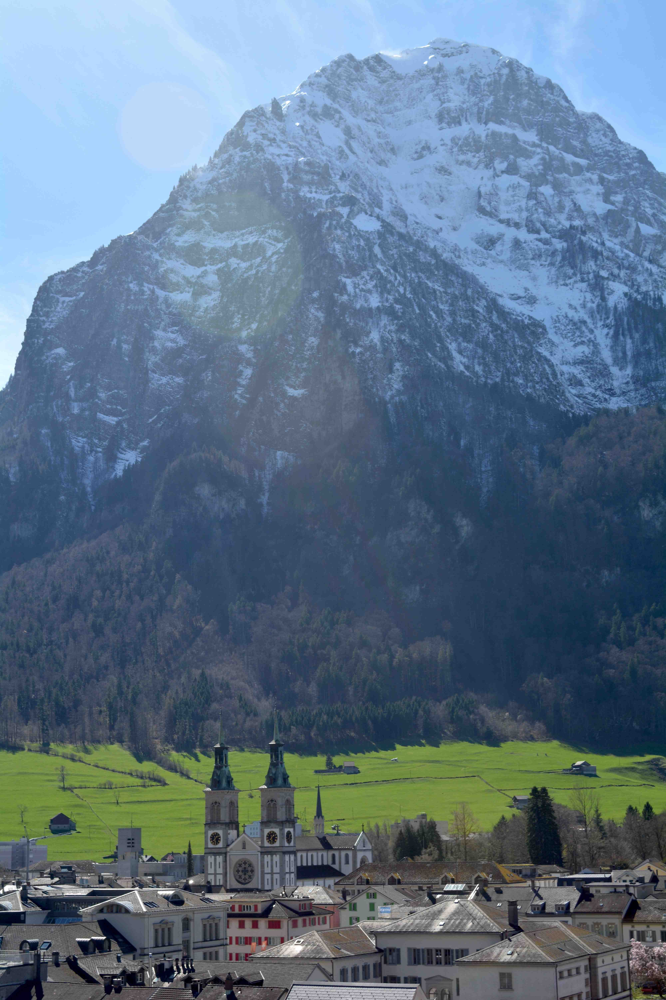

Wer sich in der malerischen Stadt Glarus bewegt, kommt kaum um sie herum – ähnlich majestätisch wie der Gipfel des Hausbergs Glärnisch im Hintergrund reichen die Kirchtürme gegen den Himmel empor: Die Stadtkirche Glarus! Der Bau mit seiner imposanten Architektur steht für eine ganze Reihe von historischen Ereignissen, welche die kulturelle, politische und auch die religiöse Geschichte des Kantons Glarus massgeblich geprägt haben. Denn wer würde denken, dass in einem Kanton mit immer wiederkehrenden heftigen konfessionellen Spannungen die Kirche für eine lange Zeit als Simultaneum von römisch-katholischen sowie von reformierten Christ:innen genutzt wurde?
Die Glarner Stadtkirche thront über der Stadt, im Hintergrund der Hausberg Glärnisch. (Bild: Tamara Landolt)
Die Geschichte der Kirche in Glarus
Die erste dokumentierte Kirche in Glarus wird aufgrund von Ausgrabungen
auf die Spätzeit des ersten Jahrtausends datiert. Sie traf dasselbe
Schicksal wie viele weitere Kirchen und Bauten in der heranwachsenden
Stadt im Verlaufe der Zeit: Sie wurden allesamt durch mehrere Brände
zerstört. Es entstand bereits um 1100 am Ort des heutigen Gerichtshauses
eine stattliche, dreischiffige Pfarrkirche mit einem Turm. Die Kirche
mitsamt den erbeuteten Schlachtbannern und einigen Reliquien wurde 1861
Opfer der Flammen, die in der Stadt wüteten.
In den Jahren 1863 bis 1866 wurde dann die neue Stadtkirche am Westrand
des damaligen Stadtplanes erbaut. Entgegen der Tradition wurde der Chor
nach Westen hin geplant. Entsprechend war nun die eindrückliche
Doppelturmfassade nach Osten zur Stadtmitte gerichtet. Der Architekt
Karl Ferdinand Stadler (1813–1870) hat sich diesen Platz nicht umsonst
so ausgesucht: Dank dem Bau auf einer erhöhten Terrasse nimmt die Kirche
den Platz eines monumentalen Hauptbaus ein und fügt sich so imposant in
das Stadtbild ein.
Die Raumaufteilung der Kirche entspricht der romanischen Basilika, wobei
das Mittel- und Querschiff ein Kreuz bilden. Längs dem Mittelschiff
finden sich zwei Seitenschiffe, Rundbögen stützen auf zehn runden
Säulen. Die ursprüngliche Kirche war reich an Dekorationsmalereien sowie
umfangreicher liturgischer Möblierung. Bis zum heutigen Zeitpunkt wurde
die Kirche bereits mehrmals renoviert und angepasst. Um 1928 setzte der
Architekt Karl Moser (1860–1936) mit verschiedenen abgestuften Rottönen
an den Wänden und den hellblauen Decken einen ausdrucksvollen Akzent.
1940 brachte dann ein weiterer Brand den Dachstuhl zum Einsturz, was die
Zerstörung verschiedener historischer Ausstattungen zur Folge hatte. Die
stark beschädigte Kirche wurde durch den Architekten Daniel Aebli
(1893–1981) dem damaligen Zeitgeist entsprechend fast ohne Farbe oder
dekorative Elemente erneuert. Mit der Aufhebung der paritätischen
(gleichberechtigten) Nutzung der Kirche im Jahr 1964 wurde dann auch der
Chor nochmals umgestaltet. Die jüngste Restaurierung fand in zwei
Etappen zwischen 1995 und 1999 statt, wobei verschiedene ursprüngliche
Elemente wieder hergestellt wurden.
Das frühere Altarbild, welches 1.86 Meter breit und rund 3.3 Meter hoch
war und Zeugnis über die gemeinsame Nutzung der Kirche gibt, befindet
sich heute im römisch-katholischen Pfarreizentrum in Davos.
Ein Blick in den schlichten Chorbereich. Das damalige Altarbild steht heute im Pfarreizentrum der römisch- katholischen Pfarrei in Davos. (Bild: Tamara Landolt)
Die Reformation im Kanton Glarus
Bevor der bedeutende Schweizer Reformator Huldrych Zwingli (1484–1531)
in Zürich aktiv wurde, arbeitete er als junger Pfarrer in Glarus. Von
1506 bis 1516 wirkte er als Leutpriester, gründete eine Lateinschule und
befürwortete das Bündnis mit dem Papst. Heute noch zeugt der reiche
Kirchenschatz von Glarus, unter anderem der Zwingli-Kelch, von seiner
Arbeit.
1516 musste Huldrych Zwingli das Land Glarus verlassen und gelangte nach
Zürich, wobei die engen Beziehungen nach Glarus bestehen blieben. So
fasste die Reformation nach und nach Fuss im Kanton Glarus. Ab 1526
entschloss die Landsgemeinde dreimal beim «alten kirchlichen Herkommen»
zu bleiben, aber ungeachtet dessen traten viele zum neuen Glauben über,
was zu einer schwerwiegenden Krise im Kanton führte.
Erst an der Landsgemeinde im Jahre 1529 stimmte die Bevölkerung dem
Vergleich zu, dass jede Kirchgemeinde selbst über die Reformation
entscheiden könne – wobei aber keinesfalls nur religiöse, sondern auch
wirtschaftliche, gesellschaftliche und politische Faktoren Einfluss
nahmen. So verblieben die reicheren Dörfer wie Linthal, Schwanden,
Glarus und Näfels mit einflussreichen Handelsleuten beim alten Glauben,
da beispielsweise der Verzicht auf Solddienst, wie Zwingli ihn forderte,
eine Bedrohung für die Einkünfte und den Einfluss wäre. Ärmere Dörfer
hingegen befürworteten den neuen Glauben, infolgedessen es unter anderem
zu Bilderstürmen kam.
Nach verschiedenen Streitigkeiten bis hin zu handgreiflichen
Auseinandersetzungen kam am 21. November 1532 dank Vermittlung von
eidgenössischen Gesandten der erste Glarner Landesvertrag zustande,
welcher die Parität (Gleichberechtigung) beider Konfessionen sowie die
Glaubensfreiheit des Einzelnen anerkannte. Unter anderem wegen dieses
Landesvertrages nimmt der Kanton Glarus eine Sonderstellung innerhalb
der Reformationsgeschichte der Schweiz ein: Während sich die Stände dem
neuen Glauben zu- oder abwandten, regelte das Abkommen das
Simultanverhältnis der Stadtkirche Glarus, die Verteilung der
bestehenden Kirchen in den umliegenden Dörfern sowie der Schutz der
altgläubigen Minderheit vor demokratischer Übermehrung.
Wer nun denkt, dass die Spannungen rund um die Reformation im damaligen
Lande Glarus beseitigt waren, täuscht sich. Immer wieder gab es
Versuche, den Kanton zurück zum alten Glauben zu führen. Zeitweilen
wurden bis zu drei Landsgemeinden nacheinander abgehalten: Eine für die
katholische Bevölkerung, eine für die reformierte Bevölkerung und eine
für die Politik! Auch in der Zeitrechnung gab es Unterschiede: Die
reformierte Bevölkerung lehnte die Kalenderreform von Papst Gregor XIII.
(1502–1585) ab und lebte entsprechend immer einige Tage im Rückstand.
… und heute?
Bereits im Jahre 1919 starteten die römisch-katholischen Christ:innen
den Versuch, eine eigene Kirche zu bauen. Es wurde Land gekauft und nach
dem Hochamt des 1. April 1962 erfolgte der Spatenstich, nur einen
Katzensprung von der bisherigen Kirche entfernt. Am 16. August 1964 fand
die Kirchweihe statt und die römisch-katholische Bevölkerung erhielt mit
der St. Fridolinskirche ihre eigene Pfarrkirche. Bis vor 60 Jahren wurde
die Stadtkirche Glarus als Simultaneum gleichermassen von beiden
Konfessionen genutzt und geschätzt, bestimmt könnten heute noch einige
Zeitzeug:innen Episoden aus dieser Ära der Geschichte erzählen. Die
Türen der Glarner Stadtkirche steht weiterhin allen Religionen sowie
Konfessionen offen. Nebst Anlässen der reformierten Kirchgemeinde wird
die Kirche aufgrund ihrer Akustik für Konzerte verschiedenster Art
genutzt.
Und von den früheren Spannungen betreffend Glaubensfragen ist heute kaum
mehr etwas zu spüren. Gemeinsam werden die verschiedenen Feste wie der
Kirchweihsonntag (Chilbi), die Landsgemeinde oder die Näfelser Fahrt
wieder begangen, eine einheitliche Zeitrechnung wird geführt und die
alten Fehden sind Geschichte.
Die mehrmals renovierte Stadtkirche heute. (Bild: Tamara Landolt)
Tamara Landolt ist Bachelorstudentin an der Theologischen Hochschule in Chur.
Weitere Artikel von {{ author.author }} finden Sie hier:
Zur Vertiefung:
- Departement Bildung und Kultur, Kanton Glarus (Hg.): Glarner Heimatbuch: Lehrmittel für den Unterricht an der Volksschule des Kantons Glarus, Glarus 2008.
- Davatz, Jürg (Hg.): Die Stadtkirche Glarus 1861-1999: Ein Hauptwerk von Ferdinand Stadler und des Historismus in der Schweiz, Glarus 2000.
- Gemeinde Glarus (Hg.): Hauptort Glarus: Schauplätze seiner Geschichte, Glarus 2011.
- Laupper, Hans/ Schindler, Martin Peter/ Tremp, Ernst/ Kamm, Rolf/ Marti-Weissenbach, Karin/ Head-König, Anne-Lise/ Rohr, August (Hgg.): Historisches Lexikon der Schweiz (HLS), 2017, verfügbar unter: www.hls.ch (24.03.2024).
- Gäumann, Andreas (Hg.): Vortrag «die Reformation im Glarnerland», 21.02.2002, verfügbar unter: www.evang-steckborn.ch (10.04.2024).
Weitere Hinweise:
- Führungen in der Stadtkirche Glarus: www.glarnerland.ch.